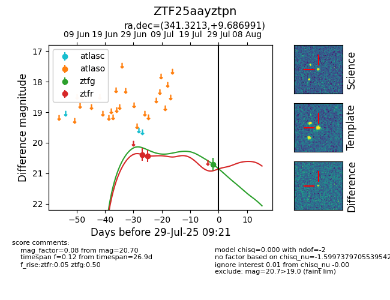

Target ZTF25aayztpn at 2025-07-29 09:21, see:
FINK: fink-portal.org/ZTF25aayztpn
Lasair: lasair-ztf.lsst.ac.uk/objects/ZTF25aayztpn
ALeRCE: alerce.online/object/ZTF25aayztpn
alt names
ZTF25aayztpn (ztf,fink)
coordinates:
equatorial (ra, dec) = (341.3213,+9.68699)
galactic (l, b) = (78.8737,-42.14334)
photometry
last ztfg=20.70, ztfr=20.43
1 ztfg, 2 ztfr detections
